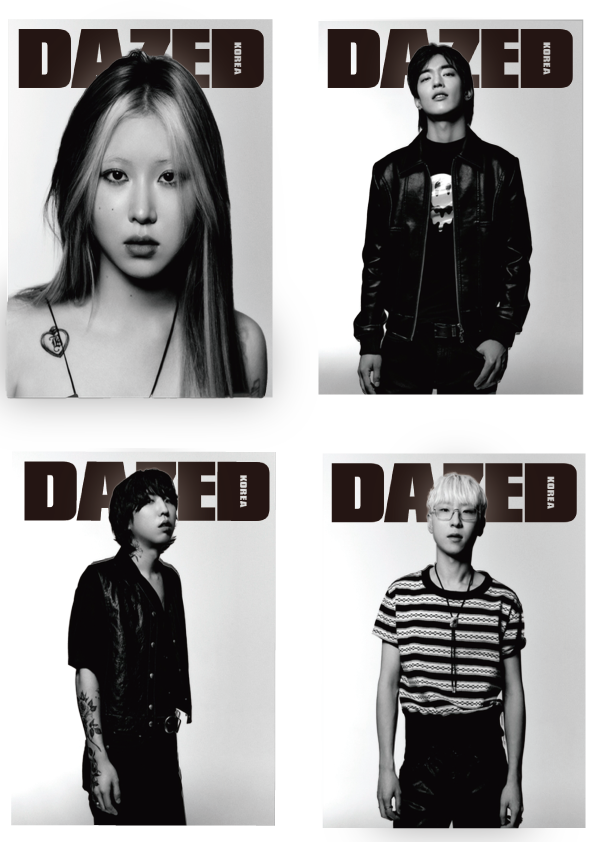
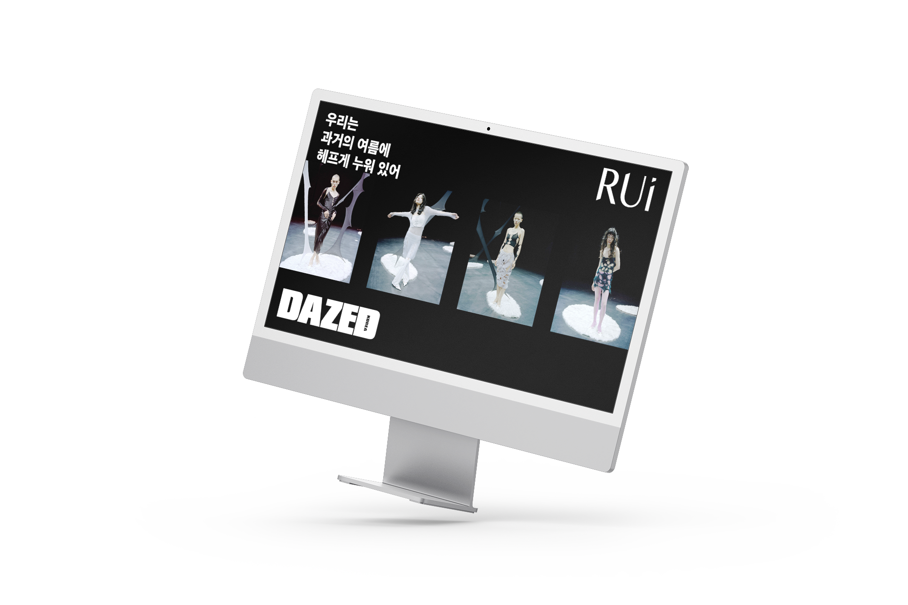
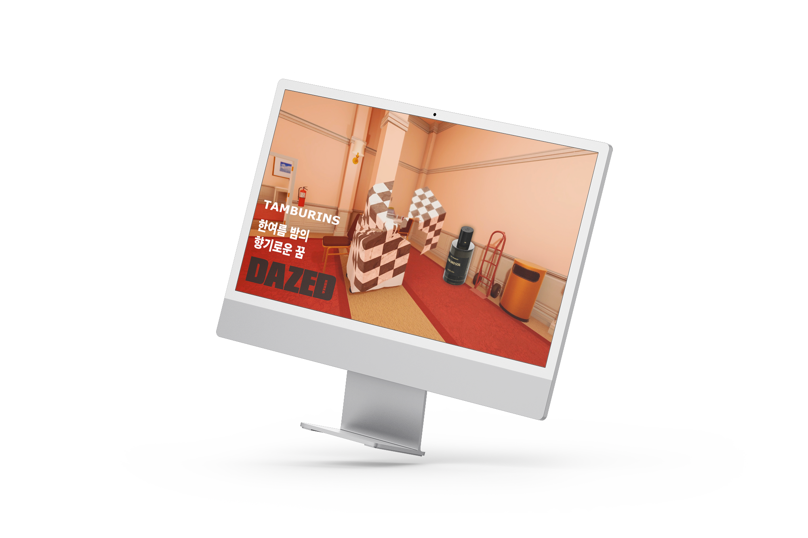
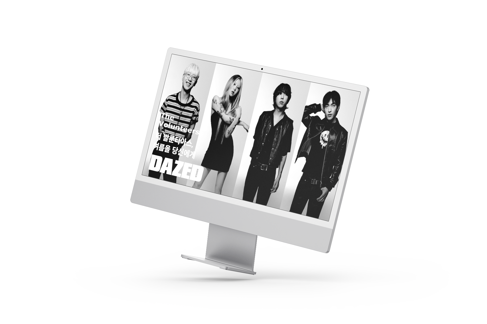
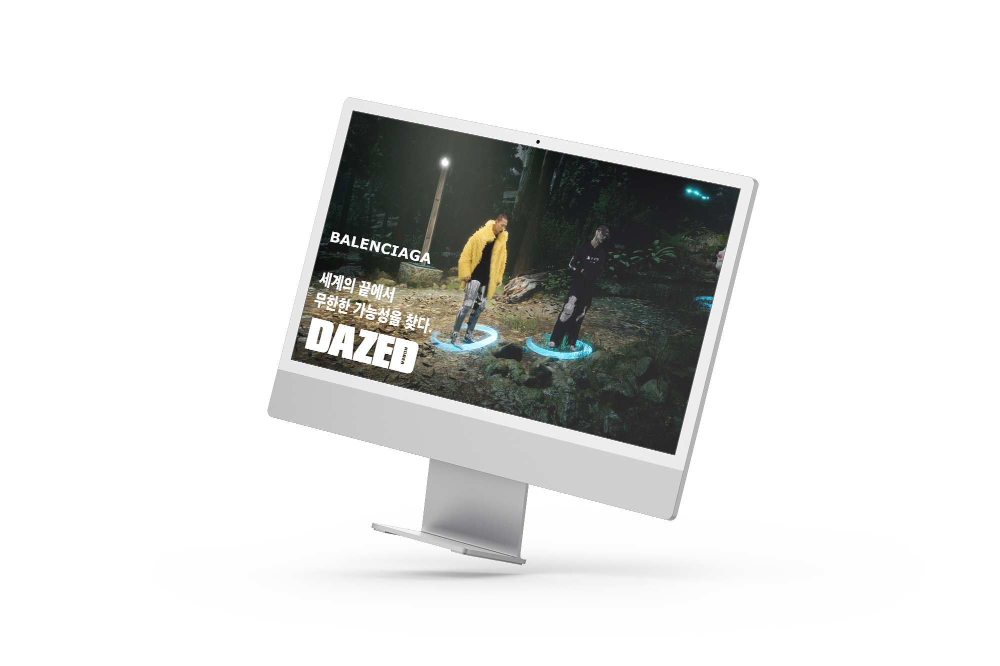
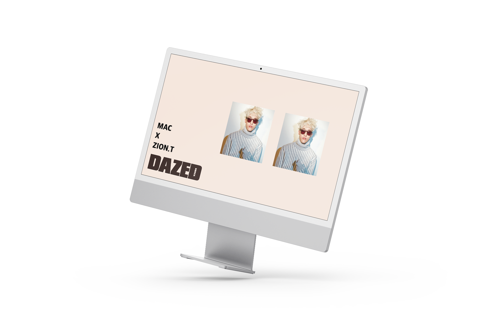
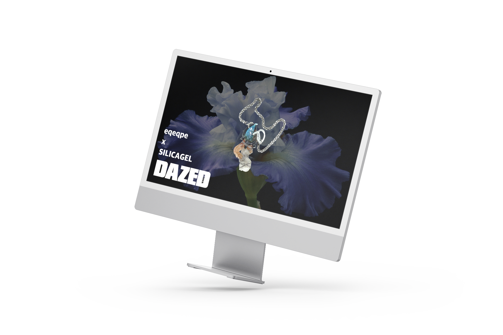

-
DAZED
DAZED AUGUST ISSUE

2021
AUGUST
ISSUE8월호에서는 우리가 그리워하는, 그러나 이미 신기루가 된 과거의 여름과 앞으로 올 가상세계의 가을을 다뤄 본다. 2021년 8월은 휴가철임에도 코로나가 장기화되면서 제대로 휴가를 즐기지 못하게 되었다. 우리는 영상에서 과거의 여름 속에 헤메이다 인터넷 안에 디지털 가상세계(메타버스)로 떠날 준비를 하며 꿈의 가을을 그린다.
 -
RUI
Rui

Rui X 우리는 과거의 여름에 헤프게 누워 있어
기획의도
8월호의 메인 컬렉션은 브랜드 루이의 21 A/W와 함께 하며 가을을 준비한다. 주목받는 중국 브랜드이기도 하며, 데이즈드만의 위트 있는 스타일링을 함께 보여줄 수 있기 때문에, 시너지 효과를 의도하여 기획한 컬렉션이다. 루이 주(Rui zhou)는 늘어날 뿐 끊어지기 힘든 실의 속성을 정확히 타파해, 몸에 밀착된 니트와 이를 연결하는 구슬을 통해 ‘불완전한 개념’을 탐구한다. 여기서 구슬은 장식보다 실용적인 기능에 가까우며 ‘미완성, 깨짐, 결핍된 사랑’처럼 정형화되지 않은 조각을 연결해 살결을 감싸고 있다는 것을 의미한다.
Key Point
패션과 영화의 결합하는 영상. 침대에 누워 손을 잡는 명장면이 담긴, 애정결핍을 상징하는 영화, 빈센트 갈로의 <버팔로 66>의 장면을 모티브로 촬영한다. 유명한 영화에서 영감을 따온만큼 브랜드 루이의 아이덴티티가 더 생생히 다가올 수 있을 것이다. 천장에서 촬영하는 구도로 널브러진 옷들과 모델 두 명, 여러 명이 누워서 서로 불안하게 쳐다보며 손을 잡다가 놓는 장면이 반복된다.
-
Tamburins
Tamburins

TAMBURINS X 한여름 밤의 향기로운 꿈
기획의도
여름이 되면 민감해지는 향. 뷰티 브랜드는 탬버린즈와 함께 콜라보 한 영상이다. 탬버린즈는 감각적이며 영한 브랜드로 3D 그래픽, 움직이는 말의 쇼룸 등 자유로운 방식을 선호한다. 탬버린즈와 꿈의 환각과 관련된 게임 그래픽 방식을 도입하여 ‘몽롱할 정도로 기분이 좋은 향’의 느낌을 주도록 한다.
Key Point
영감을 받은 게임 ‘슈퍼리미널(superliminal)’ 꿈 속에서 공간감에 인한 착시로 원근감이 파괴되어 크기가 제멋대로 움직이며, 이 착시를 이용해서 꿈을 탈출하는 게임이다. 무너질듯이 가득한 탬버린즈 제품이 가득한 쇼룸에서 자신에게 맞는 향을 찾아가면서 쇼룸을 떠나는 이야기이다. 템버린즈의 쇼룸을 대리로 체험해볼 수 있으며 다양한 향에 대한 리뷰도 가능할 것이다.
-
T
The Volunteers

더 발룬티아스, 여름을 당신에게
기획의도
백예린이 보컬로 활동해 화제가 된 더 발룬티아스. 여름을 맞이해 첫 락 장르의 정규앨범을 낸 더 발룬티아스의 인터뷰와 데이즈드 1층 공간에서 비대면 공연 영상을 담는다. 아직 더 발룬티아스에 관한 정보가 적은 만큼 솔로 백예린과 더 발룬티아스의 팬들의 많은 구매가 이어질 것이라고 예상된다.
Key Point
인터뷰영상, 공연영상 (full ver.) 각각 두개의 영상을 제작한다. 인터뷰 영상에서는 공연 장면과 중첩되면서 더 발룬티아즈가 생각하는, 락이 여름에 갖는 의미에 대해서 탐구한다. 또한 코로나 이전에 우리가 가진 여름의 의미가 무엇이었는지 알아본다. (ex) 락 페스티벌을 즐기던 관객과 밴드) 영상은 밴드 오아시스 뮤직비디오를 참고했다. 인터뷰 영상은 밴드 오아시스의 ‘Champagne Supernova’에서 다양한 색상에 최면 걸린듯한 배경(파랑을 빼고 핑크를 주색으로 설정), 공연 영상은 오아시스 ‘whatever’ 뮤직비디오를 참고해, 간결한 하얀 방 안(흑백)에서 간단히 먹고 즐기며 노래 부르는 자유로운 모습을 담는다.
-
B
Balenciaga

BALENCIAGA X 세계의 끝에서 무한한 가능성을 찾다.
기획의도
브랜드 발렌시아가가 ‘After world’ 의 컨셉으로 메타버스(가상세계)에서 21 F/W 패션쇼를 연다. 이는 일반 대중들도 패션쇼를 볼 수 있게 제작한 혁신적인 마케팅 방식으로 전세계의 주목을 받고 있다. 발렌시아가가 새로운 세상에서 무한한 가능성을 찾으려고 하는 메세지를 잘 담을 수 있도록, 영상에서 ‘슬롯머신’ 을 활용한다. 무작위성은 무한성으로 이어지기 때문이다.
Key Point
세로형 ‘슬롯머신’에 발렌시아가 3D 그래픽 룩북을 입혀서 무작위로 옷이 입혀지는 과정을 살펴본다. 이 때 어긋나는 그래픽, 어긋나는 룩에도 무조건 빙고를 외치는 슬롯머신으로 제작한다. 사실 패션에는 정답이 없기 때문이다. 이러한 메세지는 브랜드 발렌시아가가 추구하는 패션의 무한한 가능성과도 일맥상통하다.
-
M
Mac

MAC X ZION.T
기획의도
화장품 브랜드 맥 립스틱 홍보를 위해 자이언티를 섭외했다. 자이언티는 평소에 선글라스를 끼는 것으로 유명한 가수이다. 같은 선글라스를 끼고 있다면 우리가 주목할 수 있는 건 오직 입이다. 자이언티는 입으로 노래를 부르는 직업을 갖기도 하다. 또한 이번 협업을 통해서 디즈니 등 다양한 작업을 하는 맥에게 아티스트적인 면모를 보여줄 수 있는 좋은 기획이다.
Key Point
입술에 초점이 갈 수 있도록, 선글라스와 옷은 고정으로 둔 채 배경색과 입술이 계속해서 바뀔 수 있도록 만든다. 사진이 여러장 움직이는 듯한 움직이는 짤 방식을 오프닝으로 자이언티가 고정된 자세로 노래를 부르는 것을 함께 찍는다. 우리가 주목할 수 있는 건 오직 입술이다. 레퍼런스로 안경브랜드 ‘Theo’를 참고했다.
-
E
eqeqpe

eqeqpe X SILICAGEL
기획의도
여름에 가장 필요한 제품은 패션 악세사리다. 마치 그들만의 메타버스가 있는 듯한 미래주의 느낌을 풍기는 ‘이큐이큐피이’ 악세사리 브랜드에 대해서 알아본다. ‘이큐이큐피이’는 영상을 잘 활용하고 있는 브랜드다. 밴드 실리카겔 음악 24분에 걸친 뮤직비디오에 함께 출연하고 있다. 뮤직비디오 컨셉을 응용하여 ‘이큐이큐피이’ 제작자이자 모델인 다솜(@313103)과 실리카겔 김한주와의 홈쇼핑 느낌의 인터뷰를 제작한다.
Key Point
뮤직비디오에서 느껴지는 홈쇼핑 컨셉을 이용하여, 다솜과 실리카겔 김한주가 MC로 브랜드 이큐이큐피이 악세사리 홈쇼핑처럼 서로 대화를 하며 물건을 홍보한다. 물건을 가운데에 배치하고 악세사리가 만들어진 과정부터 서로 만나서 작업을 만드는 과정까지 이야기하는 대담 인터뷰를 진행한다.